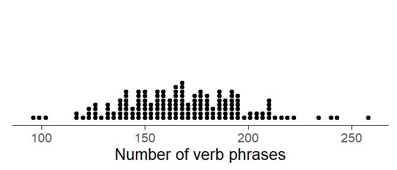
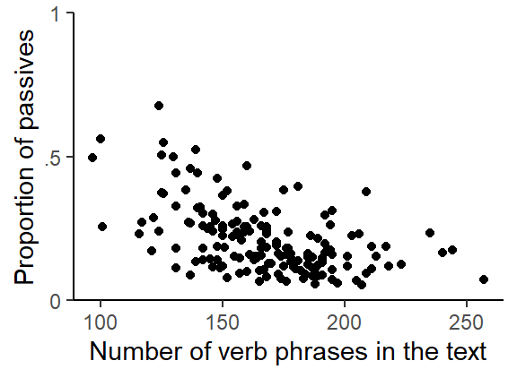
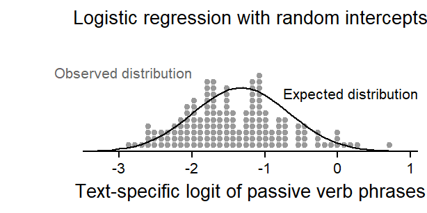

This blog post illustrates a number of strategies for modeling clustered binomial data. It describes how they handle the non-independence among observations and what kind of estimates they return.
A typical feature of corpus data is their hierarchical layout. Observations are usually clustered, which is the case if multiple data points are from the same text (or speaker). Observations from the same source are usually more similar to one another, reflecting idiosyncracies of the author/speaker or particularities of the context of language use. For binary outcome variables, there are different options for modeling such data. This blog post builds on a paper by Anderson (1988) and contrasts approaches that differ in the way they represent (or account for) the non-independence of data points.
R setup
library(tidyverse) # for data wrangling and visualizationlibrary(marginaleffects) # to compute model-based estimateslibrary(corpora) # for data on passiveslibrary(kableExtra) # for drawing html tableslibrary(lattice) # for data visualizationlibrary(likelihoodExplore) # for drawing the binomial likelihoodlibrary(gamlss) # to fit a variant of the quasi-binomial modellibrary(aod) # to fit a beta-binomial modellibrary(PropCIs) # to calculate Wilson score CIslibrary(doBy) # to convert data from short to long formatlibrary(lme4) # to fit mixed-effects regression modelslibrary(uls) # pak::pak("lsoenning/uls")
Data: Passives in academic writing
We use data on the frequency of the passive in the Brown Family of corpora, which is part of the {corpora} package (Evert 2023). We concentrate on the genre Learned and consider texts from Brown and Frown.
d <- PassiveBrownFam |>filter( genre =="learned", corpus %in%c("Brown", "Frown")) |>select(id, corpus, act, pass, verbs)
There is one row per text and the following variables are relevant for our analyses:
id text identifier
corpus source corpus (“Brown” vs. “Frown”)
act number of active verb phrases in the text
pass number of passive verb phrases in the text
verbs total number of verb phrases in the text
For each text, the frequency of the passive can be expressed as a proportion: the proportion of verb phrases that are in the passive voice. We add this variable to the data frame:
d$prop_passive <- d$pass/d$verbs
We use a dot diagram to inspect the distribution of these proportions across the 160 texts. In Figure 1, each dot represents a text, and the scores reflect the share of passive verb phrases among all verb phrases in the text document. We will refer to this quantity as the text-specific proportion of passive verb phrases.
Figure 1: Dot diagram showing the proportion of passive verb phrases in the 160 texts.
The 160 texts also differ in the number of verb phrases they contain, so let us also look at this distribution. Figure 2 shows that this count varies between roughly 100 and 250.
draw figure
d |>ggplot(aes(x = verbs)) +geom_dotplot(method ="histodot", binwidth =3, dotsize = .7) +theme_dotplot() +xlab("Number of verb phrases")

Figure 2: Dot diagram showing the distirbution of the number of verb phrases per text file.
The 160 texts can be considered a sample of academic prose from the language variety of interest, written American English in the second half of the 20th century. In selecting (or sampling) these 160 academic texts, the corpus compilers essentially selected a set of authors, or speakers, of this language variety. In some sense, these individuals represent the primary sampling units: Our sample size for making inference about a larger population of speakers is 160.
Each text in the Brown Family of corpora is around 2,000 words long. A text excerpt, and the verb phrases it contains, can be considered as a sample from a (hypothetical) population, the academic prose produced by a specific author. At this level, the language use (or writing style) of this individual is the population of interest. The 2,000 words, (or, e.g., 160 verb phrases) then represent the secondary sampling units.
This means that we can use the information in the text to make inferences about the underlying propensity of the author(s) to use the passive voice in their academic writing. Texts with fewer verb phrases provide less information, and – due to sampling variation – we would expect smaller samples to yield more variable proportions (see Sönning and Schlüter 2022 for an illustration).
This is indeed the case for the present data. The point cloud in the Figure 3 below shows a trumpet-like shape: the highest proportions are from the texts with the fewest verb phrases. We should note, however, that other factors may contribute to this pattern: Thus, texts with fewer verb phrases necessarily feature longer (and presumably more elaborate) sentences, an indicator of abstract writing style that is also associated with passive usage.
draw figure
d |>ggplot(aes(x = verbs, y = prop_passive)) +geom_point() +theme_classic_ls() +scale_y_continuous(limits =c(0,1), expand =c(0,0),breaks =c(0, .5, 1),labels =c("0", ".5", "1")) +ylab("Proportion of passives") +xlab("Number of verb phrases in the text")

Figure 3: Scatterplot showing the relation between the proportion of passives and the sample size (number of verb phrases in the text).
To emphasize the two-stage sampling design involved in corpus compilation, let us make visual inferences about the language use of the individual authors. To this end, we can construct a 95% confidence interval for each text-specific estimate. We will use the package {PropCIs}(Scherer 2018) to calculate 95% Wilson score confidence intervals for each of the 160 texts.
?@fig-dotplot-text-cis presents text-level estimates of the proportion of passives with a 95% confidence interval. The degree of overlap among the 160 intervals can be interpreted as giving an indication of the heterogeneity of the individual authors. If the 160 authors showed a similar inclination toward the passive, we would observe considerable overlap among the error bars. Judging from the figure below, however, there seems to be appreciably heterogeneity.
We start with a simple binomial model, which basically ignores the structure of the data. It uses a single parameter to express the mean proportion of the passive in the dataset. This means that it essentially treats all verb phrases in the data (n = 26772) as an unstructured sample from the population of interest, each one drawn independently of the other ones. The way the data are presented to the model, with one row per text, does not matter to the binomial model – it produces the same result if we supply just one row, with verbs representing the total number of verb phrases and pass the total number of passives in the data.
Since the clustering variable Text is not taken into account, the model rests on the assumption that the 160 texts share the same underlying relative frequency of the passive. This means that the authors are assumed to be perfectly homogeneous with respect to their stylistic preferences. Under this model, the observed variability in proportions is merely a result of sampling variation, which in turn depends on (i) the number of verb phrases in the text, and (ii) the overall proportion of the passive.
Point (ii) deserves some more comment. For binomial data, sampling variation is smaller the closer we get to 0 and 1. This is due to the boundedness of the scale – near 0 or 1, there is less room for variation. Statistically speaking, the variance of the binomial distribution depends on its mean. As Figure 4 illustrates, it is greatest at .50 and decreases toward the endpoints of the proportion scale. This means that the variability of observed proportions depends on the mean of the binomial distribution.
Figure 4: Mean-variance relationship in the binomial model.
We can fit this model in R using the glm() function:
m <-glm(cbind(pass, act) ~1, data = d, family ="binomial")
The model intercept is -1.37, which is the mean probability of the passive, expressed on the log odds scale. We can use the function plogis() to back-transform to the proportion scale:
round(plogis(coef(m)), 3)
(Intercept)
0.203
A 95% CI can be constructed using the function confint():
plogis(confint(m))
2.5 % 97.5 %
0.1981468 0.2077818
Model-based estimates on the proportion scale are easy to obtain using the {marginaleffects} package (Arel-Bundock, Greifer, and Heiss 2024). The function avg_predictions() returns a model-based prediction of the mean probability of a passive verb phrase in the population of interest, along with a 95% CI.
The estimated proportion of .203 comes with a crisp 95% CI, which ranges from .198 to .208. Apparently, the model is very confident in its predicted probability of the passive voice.
To check how well the binomial model fits the data, we can ask it to “retrodict” the data, i.e. to tell us what it thinks the distribution of the 160 text-level proportions looks like. For this task, the binomial model uses the estimated overall proportion (.203) and the sample size for each text, i.e. the number of verb phrases it contains. It can then produce a density curve for each text, which is centered on .203 and spread out in accordance with the sample size: for a text with more verb phrases, the density curve is more peaked, and for a text with fewer verb phrases it is spread more widely around .203. Importantly, however, all density curves are centered on .203, the estimate of the population proportion.
Figure 5 draws the 160 density curves against the observed distribution of text-specific proportions. Apparently, the model fails to capture the heterogeneity among texts.
Figure 5: Fit between the binomial model and the data.
If the observed data show greater variation than anticipated by a statistical model, the data are said to be overdispersed relative to this model. Alternative modeling approaches take into account this overdispersion, or heterogeneity. As we will see, however, they do so in different ways.
Quasi-binomial model including a heterogeneity parameter
A quasi-binomial model includes a second parameter that explicitly captures the excess variation in the data (see Agresti 2013, 150–51). This dispersion parameter adjusts the variance of the binomial distribution and is often denoted as \(\phi\). It is estimated on the basis of a global \(\chi^2\) fit statistic for the model.
In this way, the quasi-binomial model allows the standard deviation of observed proportions to be greater than anticipated by the simple dependency on the mean of the distribution, which we saw in Figure 4 above. Essentially, the dispersion parameter is a multiplicative factor that adjusts the variance of the binomial distribution upwards. If the dispersion parameter is 1, the model reduces to the binomial model discussed above. The dispersion parameter also affects inferences from the model: standard errors are multiplied by \(\sqrt{\phi}\).
We can fit a quasi-binomial model using the glm() function in R:
m <-glm(cbind(pass, act) ~1, data = d, family ="quasibinomial")
Then we use the {marginaleffects} package to obtain the model-based predicted probability of a passive verb phrase (+ 95% CI):
This produces the same estimate as above, but with a wider uncertainty interval. The model intercept, once back-transformed to the probability scale, yields the same estimate:
round(plogis(coef(m)), 3)
(Intercept)
0.203
The heterogeneity factor adjusts the variance of the binomial distribution to align the model with the excess variability in the observed proportions. However, the model still assumes a constant underlying proportion for all authors. The heterogeneity parameter basically states that some perturbation, perhaps caused by omitted predictors or positively correlated (i.e. non-independent) observations in each row of the table, leads to greater variability of the observed proportions. The model does not point to a specific source of the overdispersion.
Since the variance is increased proportionally to the overdisersion parameter, the bell-shaped curves are spread out more widely. This is illustrated in the figure below. We see that the fit between model and data is much better now.
Figure 6: Fit between the quasi-binomial model and the data.
However, the quasi-binomial model does not represent the structure in our data. It does not attribute the excess variation in proportions to the fact that we are looking at 160 different texts, from speakers who may very well show different stylistic attitudes toward passive usage. Rather, it states that some noise variable increased the sampling variation when drawing verb phrases from each speaker, with speakers nevertheless being actually homogeneous with respect to their underlying usage rate of the passive.
While the quasi-binomial model effectively adjusts inferences for the non-independence of observations, the way in which this is achieved may not be appropriate in all situations (see Finney 1971, 72). In particular, if the data are clustered, this information should be explicitly taken into account. The models we consider next embrace the data structure and introduce parameters that describe between-cluster variation, thereby linking overdispersion to a specific source. As noted by Agresti (2013, 151), this approach is preferable, because it actually models the observed heterogeneity.
Beta-binomial model
The beta-binomial model also includes a second parameter, but this parameter has a different function (and interpretation). It explicitly allows for the possibility that the texts in the data differ in the underlying probability of passive usage. This parameter aims to represent the distribution of text-specific proportions, which means that it actively takes into account the clustering variable Text. If texts vary considerably, reflecting large overdispersion relative to the binomial model, the parameter describing the text-to-text variation will be large. If there is no evidence for surplus variation among texts, the beta-binomial model reduces to the binomial model. The relationship between the binomial mean and variance (see Figure 4) therefore remains unaltered.
Since the text-specific proportions are bounded between 0 and 1, a distribution that respects these limits must be used. In the case of the beta-binomial model, this is the beta distribution. As discussed in more detail in this blog post, the beta distribution has two parameterizations. It can be defined using two so-called shape parameters, or it can be defined using a mean and a standard deviation parameter. The mean, in our case, is the model-based overall mean proportion of passive verb phrases.
We can fit a beta-binomial model using the function betabin() in the R package {aod}(Lesnoff et al. 2012):
m <-betabin(cbind(pass, act) ~1, ~1, data = d)
The parameter controlling the spread of the text-specific proportions is termed \(\phi\). It can be extracted from the model object as follows:
m@random.param
phi.(Intercept)
0.0649405
The \(\phi\) parameter returned by aod::betabin() is the reciprocal of the standard deviation of the beta distribution, so we convert it:
sd_beta <-1/m@random.param
This gives us the mean and standard deviation of the beta distribution that describes the variability among texts. To graph this distribution, we need to translate these parameters into shape parameters (see this blog post):
Finally, we check the fit between model and data visually (see Figure 8). The beta distribution appears to capture the spread of the observed text-specific proportions quite well. We should note, however, that the density curve does not capture the additional variation among the observed proportions that is due to sampling variation. The dots are therefore expected to be spread out more widely, albeit only slightly so due to the large sample sizes (see Figure 2).
Figure 8: Fit between the beta-binomial model and the data.
Since the variation in text-specific rates is represented using a probability distribution, we can use the beta-binomial model to describe this variation in informative ways. For instance, we may be interested in the interquartile range, i.e. the spread of the central 50% of the proportions.
We now move on to a class of models that may be more familiar to many researchers: Mixed-effects regression models.
Random-effects model with identity link
We start with an ordinary random-effects regression model, which models the data on the proportion scale. This kind of model fails to respect the scale limits and does not account for the relationship between the binomial mean and variance (see Figure 4).
To run this model, we first need to convert the data from frequency to case form, so that each row in the data represents a verb phrase:
d_long <-binomial_to_bernoulli_data(response_name ="passive",data = d, y = pass,size = verbs, type ="total")d_long$passive <-as.numeric(d_long$passive) -1
Now we fit the model using the function lmer() in the R package {lme4}(Bates et al. 2015).
m <-lmer( passive ~ (1|id), data = d_long)
Let us first look at model-based predictions, which look fine:
However, these differ from the model intercept, which is higher:
fixef(m)
(Intercept)
0.2123103
We will return to this discrepancy, which is due to the fact that these are two different means, at the end of this section.
Let us look at the fit between model and data. The ordinary random-intercept model assumes that the text-specific proportions are distributed normally around the overall mean. It describes this distribution using a standard deviation parameter, which can be obtained as follows:
summary(m)$varcor$id[1] |>sqrt()
[1] 0.11225
In Figure 9, the density curve shows what the model thinks the data look like, which does not match the observed distribution. In fact, the symmetric bell-shaped curve provides a rather poor fit to the text-specific proportions: It expects negative proportions (dotted part of the curve), and it fails to capture the scale-induced asymmetry of the distribution.
Figure 9: Fit between the ordinary random-effects model and the data.
Figure 9 helps us understand the discrepancy between the back-transformed model intercept (.212) and the mean prediction produced by the {marginaleffects} package (.203). The model intercept represents the center of the bell-shaped curve in Figure 9. If the text proportions were indeed distributed symmetrically around this center, the intercept would coincide with the mean prediction. This is because the default way in which the {marginaleffects} package calculates mean predictions from a model with random effects proceeds in two steps: First, a prediction is made for each cluster (here: text), based on the cluster-specific random intercept. In step 2, these cluster predictions are averaged.
If the cluster-specific means form a symmetric distribution, they will tend to cancel out, leading to no (or very minor) discrepancies between the two types of prediction. In the present case, the text-specific predictions do not form a symmetric pile. The center of gravity is below .212, and the mean over the estimated asymmetric distribution of cluster proportions therefore lower.
We can retrieve both types of means using the {marginaleffects} package. The model intercept is equivalent to ignoring (or “turning off”) the clustering variable when making predictions. This can be done as follows:
Finally, we fit a logistic random-effects model, which uses a logit link function to respect scale constraints. This means that the proportions are not modeled directly, but instead on the unbounded logistic (or log-odds) scale.
We can fit the model with the glmer() function in the {lme4} package:
m <-glmer(cbind(pass, act) ~1+ (1|id), data = d, family = binomial)
Here is the mean prediction we get using the {marginaleffects} package:
Again, we note that it differs from the back-transformed model intercept, which is now lower:
plogis(fixef(m))
(Intercept)
0.1933644
We are again dealing with two different types of means. Before we consider how this discrepancy arises, we take a closer look at the structure of the model.
In this model, the random-intercept SD represents the variation between texts on the logit scale. We can extract the SD parameter as follows:
summary(m)$varcor$id[1] |>sqrt()
[1] 0.6599597
The model therefore assumes that the distribution of the random intercepts is symmetric on the logit scale. We can graph the text-specific proportions on the logit scale and overlay the expected distribution. The distribution of logits seems to be quite well approximated by the normal density curve.
draw figure
xyplot(1~1, type ="n", xlim=c(-3.5, 1.1), ylim =c(0,.02),par.settings = lattice_ls, axis = axis_bottom,xlab.top ="Logistic regression with random intercepts\n",xlab ="Text-specific logit of passive verb phrases", ylab =NULL,panel =function(x,y){panel.dotdiagram(qlogis(d$prop_passive), scale_y = .0012, n_bins=50,set_col="grey60", seq_min =-3.5, seq_max = .9)panel.points(x =seq(-3.5, .8, .1),y =dnorm(seq(-3-5, .8, .1), mean =fixef(m), sd = .66)/50,type ="l")panel.text(x =-2, y = .015, label ="Observed distribution", col ="grey40", cex = .8, adj =1)panel.text(x =-.75, y = .011, label ="Expected distribution", col =1, cex = .8, adj =0) })

Figure 10: Fit between text-specific logits and the random-intercept distribution assumed by the model.
Let us also look at the fit between model and data on the proportion scale. Figure 11 shows that the match is also pretty good on this scale.
Figure 11: Fit between the logistic random-effetcs model and the data.
We can again use this probability distribution to summarize text-to-text variation. The interquartile range based on this model is
plogis(qnorm(c(.25, .75), mean =fixef(m), sd = .66)) |>round(3)
[1] 0.133 0.272
The median proportion coincides with the back-transformed model intercept:
plogis(qnorm( .5, mean =fixef(m), sd = .66)) |>round(3)
[1] 0.193
Let us now consider the discrepancy between the back-transformed model intercept and the mean prediction returned by the {marginaleffects} package.
The model intercept represents the center of the bell-shaped curve in Figure 10. This means that by-text random intercepts are averaged on the logit scale, and this mean over text-specific logits is then back-transformed to the proportion scale. This estimate is often referred to as a conditional/cluster-specific estimate.
In contrast, the default average prediction returned by {marginaleffects} first back-transforms the text-specific logits to the proportion scale and then calculates a mean over text-specific proportions, i.e. the distribution in Figure 11. This estimate is often referred to as a marginal/population-averaged estimate. The difference between these means (or estimates) is whether the averaging over clusters (here: texts) was done on the logit or the proportion scale.
We can use the {marginaleffects} package to produce both kinds of averages. We get the mean over text-specific logits by ignoring (or “turning off”) the clustering variable when making predictions. This can be done as follows:
Figure 12 brings together the estimates from the different models. The first thing we note is that, in terms of proposed statistical precision, they form two groups: The binomial model is the odd one out, with a very narrow confidence interval on the estimated proportion. All other models produce confidence intervals that are very similar in length.
The second thing to note is that estimates form three groups:
The lowest estimate is the conditional mean based on the logistic random-effects model. It is the mean over cluster-specific logits, back-transformed to the proportion scale.
The marginal mean from the same model, which is the mean over cluster-specific proportions (nearly) coincides with the mean proportion returned by the beta-binomial model, and (interestingly) the conditional estimate from the ordinary random-effects model.
The third group, which yields an intermediate predicted proportion, is formed by the binomial, the quasi-binomial, and the marginal estimate from the ordinary random-effects model.
Figure 12: Comparison of model-based mean predictions.
Summary
We discussed different approaches to modeling clustered binomial data. These differ in the way they address the resulting non-independence of observations in the data. If a clustering variable is present, it is generally preferable to use a model that links the observed non-independence to this source. These (proper) modeling approaches represent the observed variation across clusters in different ways, and they yield different types of estimates for the mean proportion in the population of interest. We saw how the {marginaleffects} package can be used to construct these mean predictions, which mainly differ in terms of the scale on which they average over cluster-specific quantities.
References
Agresti, Alan. 2013. Categorical Data Analysis. Hoboken, NJ: Wiley.
Arel-Bundock, Vincent, Noah Greifer, and Andrew Heiss. 2024. “How to Interpret Statistical Models Using marginaleffects for R and Python.”Journal of Statistical Software 111 (9): 1–32. https://doi.org/10.18637/jss.v111.i09.
Bates, Douglas, Martin Mächler, Ben Bolker, and Steve Walker. 2015. “Fitting Linear Mixed-Effects Models Using lme4.”Journal of Statistical Software 67 (1): 1–48. https://doi.org/10.18637/jss.v067.i01.
Sönning, Lukas, and Julia Schlüter. 2022. “Comparing Standard Reference Corpora and Google Books Ngrams: Strengths, Limitations and Synergies in the Contrastive Study of Variable h- in British and American English.” In Data and Methods in Corpus Linguistics, edited by Ole Schützler and Julia Schlüter, 17–45. Cambridge University Press. https://doi.org/10.1017/9781108589314.002.
![]()